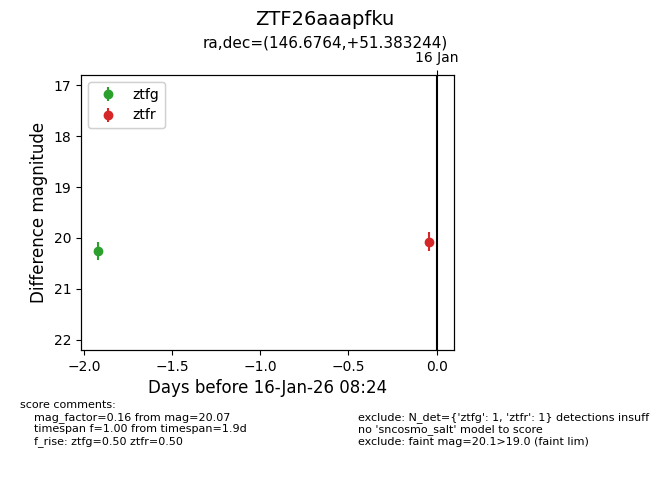
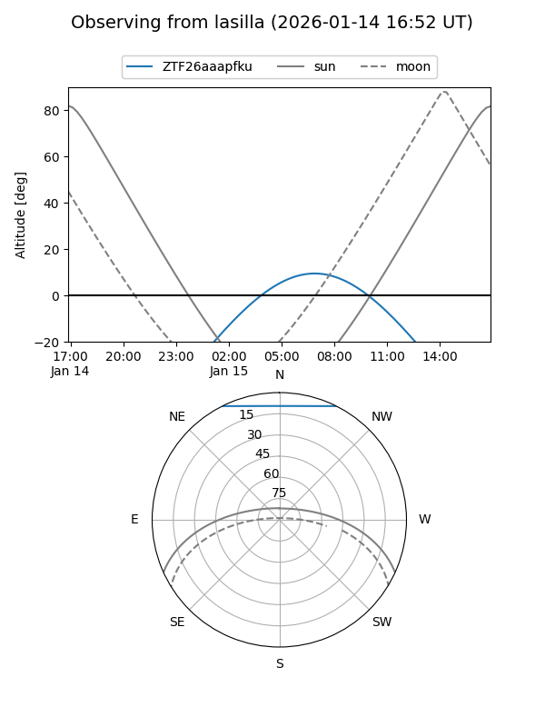
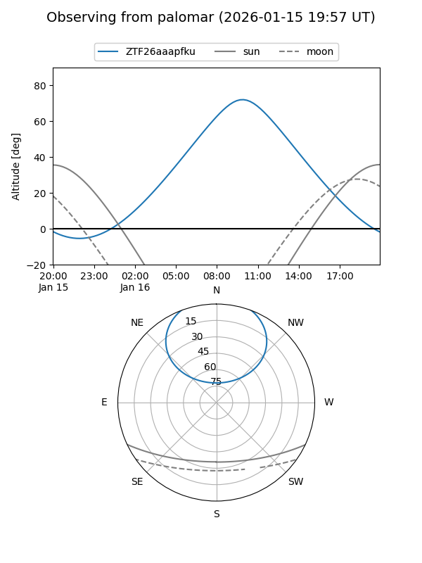
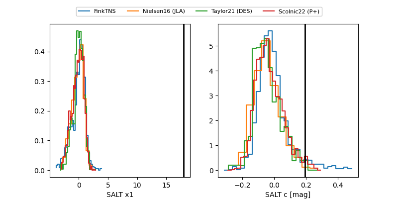

ZTF26aaapfku
Target ZTF26aaapfku at 2026-01-18 21:16
Aliases and brokers:
FINK: link
Lasair: link
ALeRCE: link
alt names
ZTF26aaapfku (ztf,fink_ztf)
Coordinates:
equatorial (ra, dec) = 146.6764,+51.38324
equatorial (HMS+DMS) = 09:46:42.35,+51:22:59.68
galactic (l, b) = (165.0342,+47.80355)
Flags:
Photometry:
last ztfg=20.27, ztfr=20.07
3 ztfg, 1 ztfr detections
Lightcurve

Visibility


Additional plots
